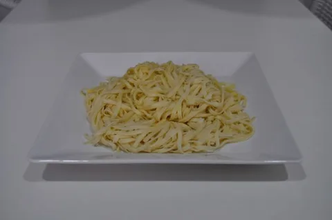
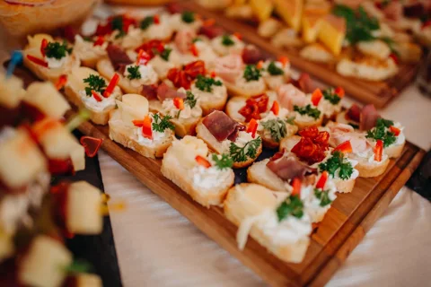
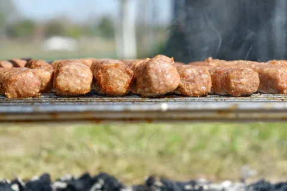
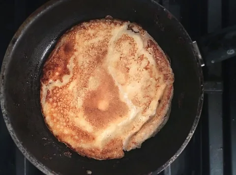

Imagens disponibilizadas como CC0 nas páginas consultadas em 13/10/2026. Não representam pratos, equipe ou eventos da marca fictícia Mesa Viva. As versões locais foram redimensionadas e convertidas para WebP.




Autor: Autor não indicado na página consultada · CC0